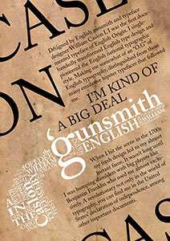

Project 01 - Type Specimen Poster
Caslon
The Caslon typeface was revolutionary for it's time. At a time when dutch - baroque typefaces were dominant the Caslon typeface was like a breath of fresh air. This typeface and those that followed would transform English type design and establish an English typographic style. The Caslon typeface quickly gained popularity, crossing the Atlantic to become the favorite typeface of Benjamin Franklin and to be used in printed editions of the American Declaration of Independence
William Caslon

William Caslon was an English gunsmith and typeface designer. He designed many influential typefaces such as the Caslon typeface. His typefaces became very popular in the 1700's and took influence from dutch baroque style, but had their own unique sharpness. This precise and tidy way of cutting typefaces would become a defining feature of the English typographic style.
Caslon Type Specimen Poster
For my Caslon Type Specimen Poster I wanted to include a body of text that would encapsulate the rebellious nature of this typeface. The typeface played a major role in the revolutionary formation of an English typographic style as well as becoming the preferred typeface of the leader of the American Revolution and being used in the American Declaration of Independece. So it seemed fitting that the body of text would have a rebellious defiant attitude.
I decided to use a parchment texture in the background of this poster as It fit the time period as well as suiting its most famous use, on the United State's Declaration of Independence.
I created a typographical illustration of a gun typical of the period to emphasize the profession of it's creator as well as the it's militant history.